BIOLOGY - IX
Digestion and Transport of Nutrients
y Digestive system y Structure of blood y Digestion y Heart y Absorption of nutrients y Health of heart y Structure of villus y Transport in plants 25
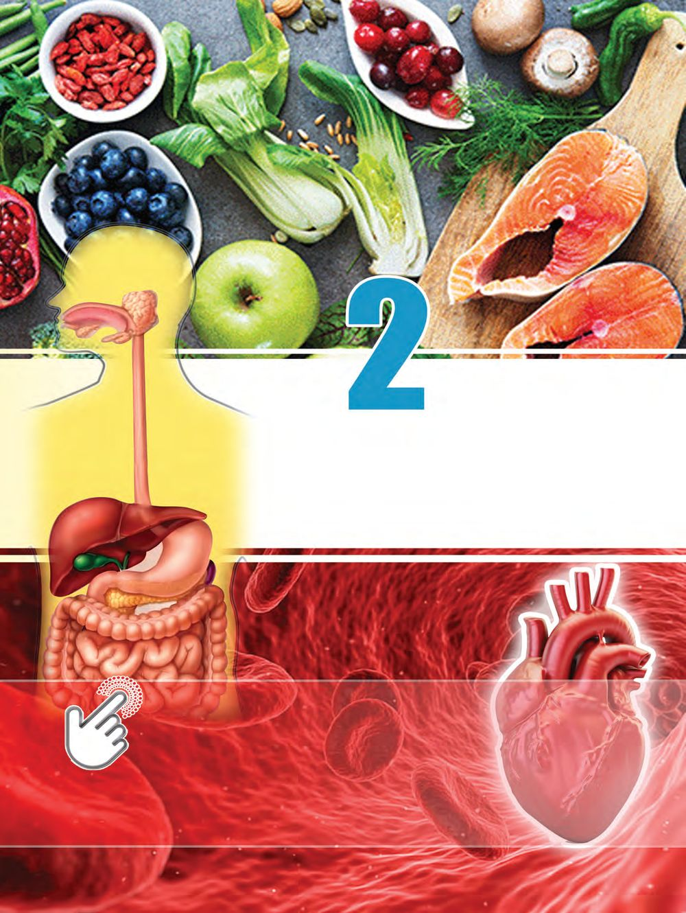
BIOLOGY - IX
Digestion and Transport of Nutrients
y Digestive system y Structure of blood y Digestion y Heart y Absorption of nutrients y Health of heart y Structure of villus y Transport in plants 25
BIOLOGY - IX
Have you noticed the given picture regarding the school Noon meal programme. A nutritious diet ensures your health. What all food items are included in your noon meal? list out. Analyse the prepared list and complete the given table 2.1. Food items
Nutrients
Function
Minerals Water Table 2.1 : Nutrients Although the dietary patterns of people in various parts of the world are different, for health, food must contain nutrients such as carbohydrates, proteins, fats, minerals and vitamins in addition to fiber and water. A balanced diet is a diet that provide all the nutrients in the right proportion. 26
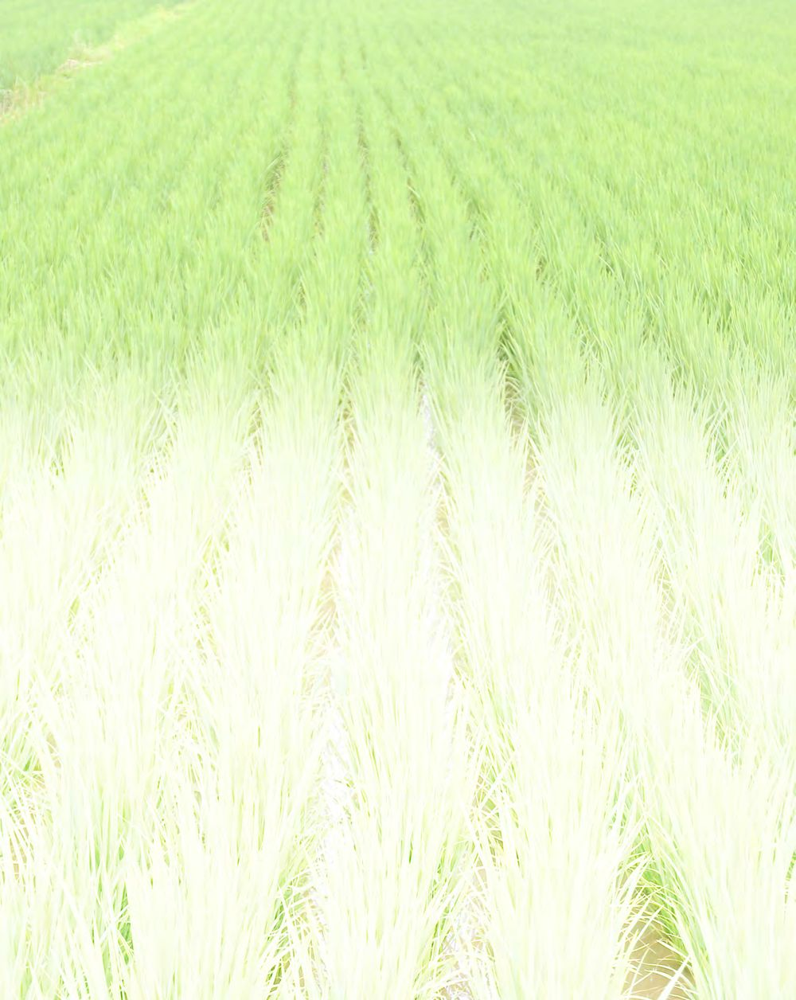
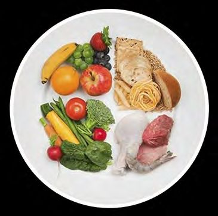
Food plate
BIOLOGY - IX
It is essential for those in the growing age to eat a balanced diet. The food items like vegetables, fruits, cereals, milk and milk products, pulses/meat, etc. should be included in the diet. Fruits and vegetables contain plenty of vitamins, minerals, other nutrients and fibers. The concept of food plate is helpful for healthy life. A food plate consists of half a plate of fruits and vegetables, a quarter of cereals, a quarter of protein-rich foods, and a glass of milk or dairy products. There is an increase in consumption of junk food among children today. Such food items are high in calories and low in nutritional value. This leads to malnutrition and other health problems. Skipping breakfast is more common among children. This causes many problems like fatigue, drowsiness, lack of attention in studies and loss of memory. So children need to get used to proper dietary habits.
Conduct a project by including children in your school on the topic “The food habits and health problems of children”. Share your findings with health workers and seek means for solving the problem. Nutrition is the process by which organisms obtain and utilize food for nutrients from the external environment. Which are the different stages of nutrition? y y
y
y
Egestion of digestive waste.
Process of nutrition becomes more complex as we move from simple to complex structured organisms. Nutritional processes of amoeba, a unicellular organism and hydra, a multicellular organism are given in illustration 2.1. Compare them and complete the table 2.2. 27
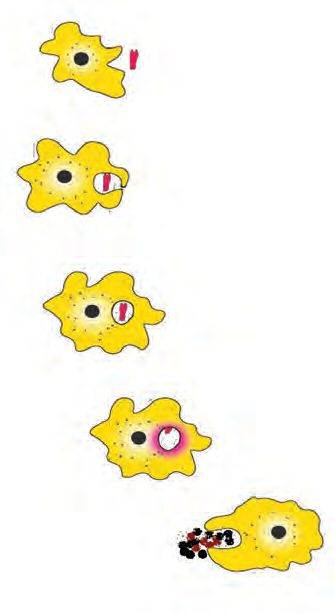
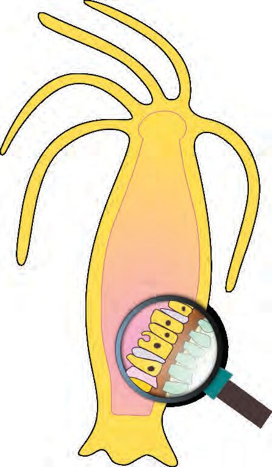
BIOLOGY - IX
Hydra paralyses the prey with the help of tentacles and carries it inside the mouth and then into the body cavity.
Amoeba near the food Engulfs the food into the cell using pseudopodia
Digestion begins in the body cavity by the action of enzymes produced by the cells of inner wall of body cavity (Extracellular digestion).
Food in the food vacuole
Enzymes in the food vacuole completely digest the partially digested components that enter the cell (Intracellular digestion).
Enzymes digest the food (Intracellular digestion) Remnants are expelled through the cell surface
Remnants are expelled through the mouth.
Illustration 2.1 : Nutrition in Amoeba and Hydra
Hints Body structure
Amoeba
Hydra
Unicellular
Means to help ingestion Part where digestion takes place
Inside the cell
Egestion of digestive wastes Table 2.2 : Nutrition in Amoeba and Hydra Extra cellular digestion also takes place in addition to intracellular digestion when it comes from unicellular organism amoeba to simple structured multicellular organism hydra. In multicellular organisms, the digestive system and the digestive process have much diversity and complexity in order to meet nutrient requirements. 28
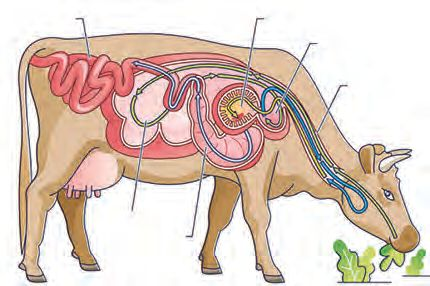
Humans eat a wide variety of food items. How does the digestion of these nutrients take place? Analyse the illustration 2.2 and form inference.
BIOLOGY - IX
Digestion The process of converting complex food materials into simple absorbable forms
Mechanical Digestion
Chemical Digestion
Breaks down food into smaller particles. This is made possible by chewing the food with teeth and by the strong contractions of the muscles of stomach and small intestine.
Complex nutrients are broken down into simple absorbable nutrients by the action of enzymes in the digestive juices.
Illustration 2.2 : Digestion Which are the parts where mechanical digestion takes place? y Mouth
y How does mechanical digestion take place in these parts? Analyse illustration 2.3 and prepare a note based on the indicators.
Behind Rumination Haven't you noticed that cows chew continuously even while resting?
Small intestine
3. Omasum 2. Reticulum Oesophagus
1. Rumen 4. Abomasum
There are four chambers in the stomach of cows. They are rumen, reticulum, omasum and abomasum. The components in food like cellulose, hemicellulose etc. are broken down by the enzymes produced by the microorganisms present in the rumen and reticulum. The process of digestion becomes more effective in them when the food that is temporarily stored in the rumen returns to the mouth and is chewed again. 29
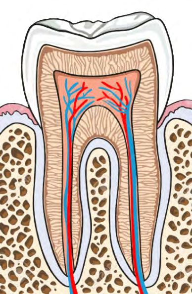
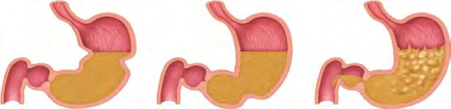
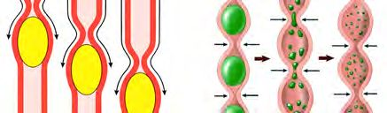
BIOLOGY - IX
Mouth
Teeth help to bite into pieces and chew the food. Tongue and saliva help in the chewing process. You have understood the different types of teeth and their function. Although teeth differ in external structure, they have many similarities in internal structure.
Structure of Tooth Enamel : The hardest substance in the human body. The outer covering of the tooth. Non living.
Crown
Dentine : Living tissue with which tooth is formed. Pulp cavity : The innermost part of the tooth. Soft connective tissue called pulp is seen. Blood vessels, nerves, odontoblast cells, etc. are seen.
Neck
Root
Cementum : Calcium containing connective tissue that holds the tooth in the socket of the gum.
Stomach
The strong peristalsis in the stomach converts food into a paste form. The circular muscles of the stomach retain food in the stomach for ample time.
Peristalsis
Circular Muscle
Small intestine
Peristalsis
Mechanical processes in the small intestine such as peristalsis and segmentation help to facilitate the movement of food and mix food with digestive juices.
Segmentation
Illustration 2.3 : Mechanical digestion y Structure of tooth. y Mechanical digestion in mouth, stomach and small intestine. What are the things to be taken care for proper dental care? Conduct an interview with a doctor, prepare a poster and exhibit it. 30
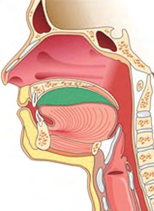
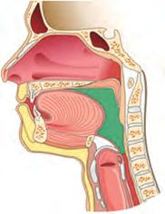
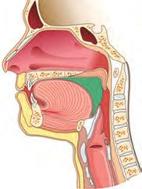
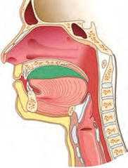
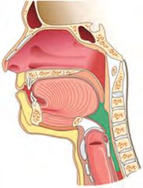
BIOLOGY - IX
Swallowing
Why doesn’t food enter trachea while swallowing it ?
Analyze the illustration 2.4 and identify the position and function of the epiglottis and uvula and gain an understading of the swallowing process.
Palate
Uvula Food
Pharynx
Tongue
Epiglottis Oesophagus Trachea
Tongue compresses the food into balls with the help of palate.
Uvula closes the nasal cavity that opens to the pharynx.
Posterior part of the tongue allows food to move over the epiglottis into the oesophagus.
Illustration 2.4 : Swallowing Now you have understood about swallowing of food and mechanical digestion. Human alimentary canal and related parts are given in illustration 2.5. Analyze it according to the indicators and present your findings about the role of each part in digestive process and about chemical digestion. 31
Trachea rises up and is closed by the epiglottis. the What is r saying reason fo should that one while not talk od? eating fo . Find out
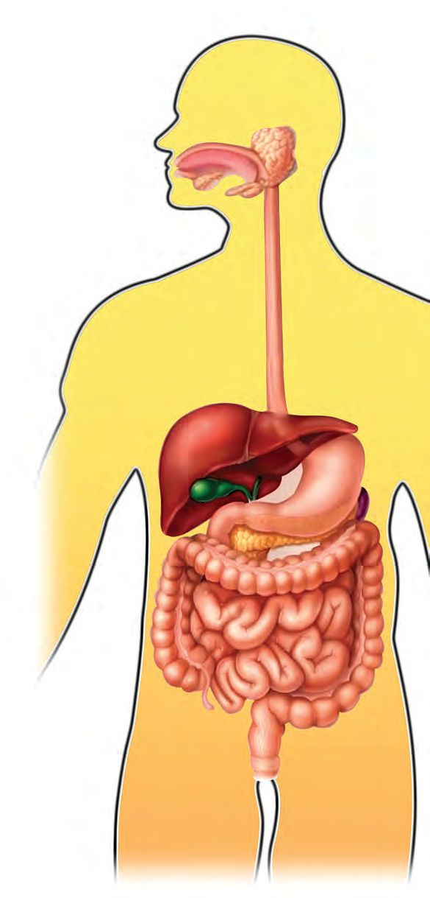
BIOLOGY - IX
Mouth
Liver
The digestion of starch begins with the help of salivary amylase of saliva which is produced from the salivary gland.
Produces bile and stores it in the gall bladder. Enzymes are absent in bile. It reaches the duodenum and converts fat into small particles and regulates pH.
Oesophagus Peristalsis moves the food into the stomach.
Stomach
Hydrochloric acid of gastric juice produced by the gastric glands destroys germs in the food. Regulates pH. The enzymes Pepsin partially digest the proteins. Lipases help in the digestion of lipids. Mucus protects the stomach wall from the actions of digestive juices.
Small Intestine
Digestive juices produced by the liver and pancreas reach the small intestine and help digestion. Different Carbohydrases of intestinal juice produced by the small intestine convert complex carbohydrates into simple components like glucose, fructose and galactose. Proteases convert proteins into amino acids. The absorption of simple nutrients, water, vitamins and minerals mainly takes place in the small intestine.
y y y y y
Pancreas Produces pancreatic juice. This reaches the duodenum and helps digestion. Pancreatic amylase in it partially digests the starch. Trypsin partially digests the proteins. Lipases completely digest the lipid into fatty acid and glycerol.
Large Intestine Undigested food substances reach here. The absorption of remaining water and salts occurs here. Certain bacteria of large intestine produce Vitamin K and B complex. Carries digestive waste to rectum and expels through the anus.
Illustration 2.5: Digestive system Parts where chemical digestion takes place. The digestion of starch, protein and lipid in different parts. Role of liver and pancreas in digestion. Absorption in small intestine and large intestine. Nutrients and their simple components. 32
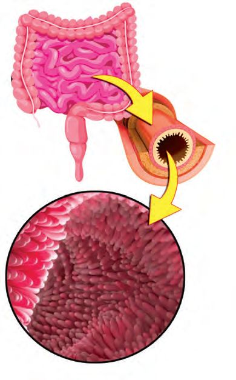
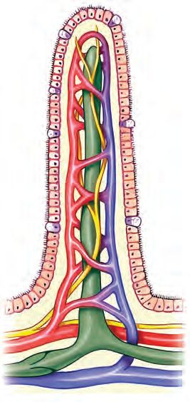
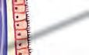
Digestion in humans is completely extracellular. Completion of digestion and absorption of simple nutrients mainly takeplace in small intestine. What are the structural peculiarities in the small intestine that are required for this? Analyse the description given below and form inferences.
BIOLOGY - IX
Absorption of simple nutrients The small intestine is a long coiled muscular tube that is around six metres long and two and half centimetres in diameter. Duodenum is the initial part of this. The peculiar structure of small intestine is highly helpful for the digestion and absorption process. Finger-like projections are found throughout the inner wall. These are called villi. These increase the surface area of absorption in the small intestine by many folds. How far is the structure of villus suitable for the absorption process? Analyse illustration 2.6 and prepare note according to the indicators.
Villus
Single layered epithelial cells The primary surface for the absorption of nutrients.
ST-459-3-BIOLOGY(E)-9-VOL-1
Blood capillaries A branch of artery enters the villus and forms the blood capillaries. They unite to form vein and leaves the villus. Absorb glucose, fructose, galactose and amino acids.
Lacteal The branch of lymph vessel. Absorbs fatty acid and glycerol into its lymph. Illustration 2.6 : Structure of villus 33
BIOLOGY - IX
y Villus and surface area of absorption. y Lacteal and absorption. y Blood capillaries and absorption. Nutrients are absorbed into the blood and lymph of villus. Let's examine how the structure of blood and lymph help in the transport of nutrients.
Blood and lymph Don't you know the different components of blood and their function? Complete the illustration 2.7 related to the blood components.
Blood 55%
Plasma
Blood Cells
45%
Water
Red Blood Cells
y .........................................................
Proteins Albumin
White Blood Cells
Globulin
y .........................................................
Fibrinogen Other components
Platelets y
Help in blood clotting
Illustration 2.7 : Components of Blood the Find out f so function different in proteins plasma.
How does the exchange of substances between blood and cells take place in humans? Don't you know the importance of tissue fluid found in the space between cells, in the exchange of substances? How is it formed? Analyse the illustration 2.8 according to the indicators and record inferences.
34
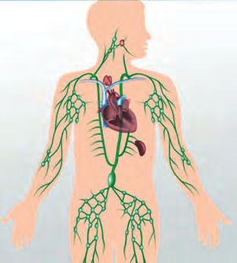

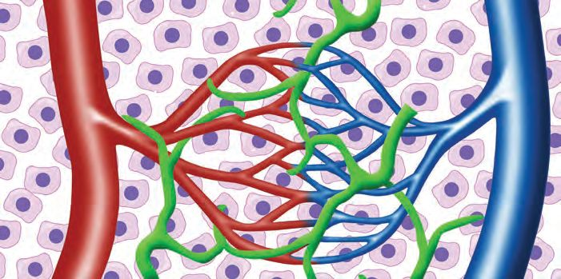
BIOLOGY - IX
Artery
Vein
Capillary
Lymph vessel
Illustration 2.8 : Formation of tissue fluid Tissue fluid When blood flows through capillaries, the fluid part of blood oozes into intercellular spaces through minute pores of the capillary wall. This fluid is the tissue fluid. Transport of substances takes place between cells and tissue fluid. y y y y
Lymph One part of the tissue fluid enters the lymph capillaries. This is called the lymph. Simple components formed as a result of fat digestion and fat-soluble vitamins are transported through the lymph.
Formation of tissue fluid. The role of tissue fluid in the exchange of substances. Formation of lymph. The role of lymph in the transport of substances.
Lymphatic system The lymphatic system consists of lymph, lymph vessels, lymph nodes, spleen, bone marrow and thymus gland. Red blood cells and large protein molecules are not seen in the lymph. Lymphatic system plays a major role in immunity.
he How is t of quantity id tissue flu d in regulate e the spac ? cells between . Find out
Lymph vessel Spleen Lymph node
Now haven't you understood the importance of blood and lymph in the transport of substances. After entering the villus, the branch of artery again divides into capillaries and they join together to form small veins and then into vein. Find whether blood vessels are arranged in this way throughout the body to exchange substances. 35

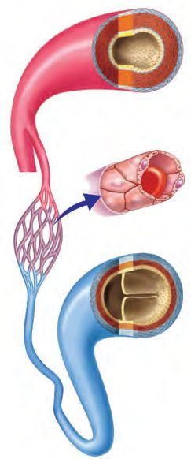
BIOLOGY - IX
Analyse the illustration 2.9 according to the indicators and record the inferences.
Artery
Thick and elastic walls. Blood flows with high pressure and high speed. Carries blood from the heart.
Capillary
Wall is formed of a single layer of cells. Minute pores are seen in the wall. Blood flows with low pressure and low speed.
Vein
Thin wall. Blood flows with low pressure and low speed. Valves are seen. Carries blood to the heart.
Illustration 2.9 : Various kinds of blood vessels
y y y y
Peculiarity of the wall of artery, vein and capillary. Blood vessels and direction of the blood flow. Speed and pressure of blood flow. Presence of valves.
How will nutrients absorbed from the small intestine into the blood and lymph reach different parts of the body? Does it include all the three types of blood vessels that you have understood? Analyse the illustration 2.10, complete the flowchart using the hints and write your inference.
Portal Veins Certain veins do not reach the heart. Instead, they carry blood from organ to organ. Such veins are called portal veins. The nutrients that are absorbed from the small intestine into the blood are carried to the liver by the Hepatic portal vein. It is an example for portal vein.
36
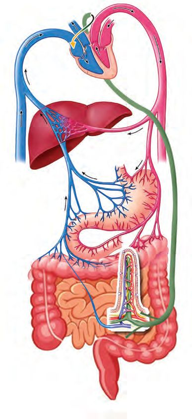

Blood containing nutrients from the liver reaches the heart through the hepatic vein.
BIOLOGY - IX
Venacava
From the small lymph vessels reach heart through the large lymph vessel
Hepatic vein
Portal vein Nutrients from the blood capillaries of the villus reach the liver through the portal vein.
Nutrients pass through the lacteal in the villus to the small lymph vessels.
Illustration 2.10 : Transport of nutrients
.............................. Glucose
Blood capillary of villus
Liver
Fatty acid
Venacava Heart Different parts of the body
37
rients Why nut ver li reach the e before th heart? . Find out
Hints Portal vein Lacteal of villus Amino acids Glycerol Hepatic vein Lymph vessel
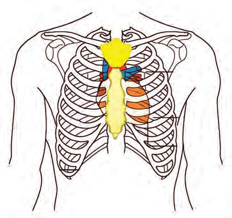
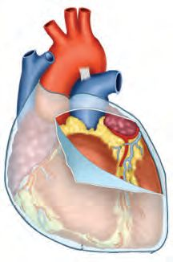
BIOLOGY - IX
For the continous flow of blood to different parts of the body, are blood vessels alone sufficient? A pump is needed to keep blood flowing continuously through the blood vessels to different parts of the body. Heart performs that function. Let us examine how far does the structure of the heart help in this.
Heart The heart is an organ made up of muscles that is situated slightly tilted towards the left in the thoracic cavity. Analyze the illustration 2.11 based on the indicators and understand the position and protection of the heart.
Sternum Ribs Vertebral column
Pericardium Pericardium is a double layered membrane that covers the heart. Pericardial fluid which is filled in between these membranes protects the heart from external shocks and helps to reduce friction between the membranes when the heart beats. Illustration 2.11 : Position and protection of the heart y Position of the heart. y Protection of the heart. y Function of the Pericardial fluid. To know the function of the heart, we need to understand more about its structure. Analyse the illustration 2.12 and discuss based on the indicators and form inferences. 38
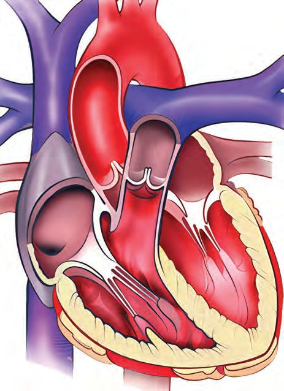
BIOLOGY - IX
Aorta Superior Venacava Pulmonary Artery
Pulmonary Vein
Semilunar Valve
B Bicuspid Valve
A Triscuspid Valve
D
C Inferior Venacava
Hint
Chambers of the heart A. Right atrium C. Right ventricle
B. Left atrium D. Left ventricle
Illustration 2.12 : Structure of the heart y The blood vessels which carry blood to the heart and the heart chambers where they reach. y The blood vessels which carry blood from the heart and the heart chambers from where they begin. y Heart valves, position, function. How does the heart work? Complete the illustration 2.13 according to the indicators and present your findings.
39
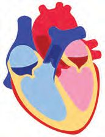
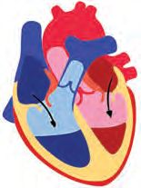
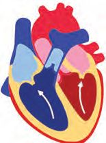
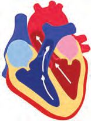
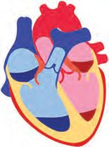
BIOLOGY - IX
Blood from different parts of the body (Blood after the kidneys have filtered out the wastes and rich in carbon dioxide and nutrients)
Blood from the lungs (Blood rich in nutrients and oxygen)
Contraction of atria (Atrial systole)
The chamber where blood enters from the right atrium .................................................................................................................................................. The chamber where blood enters from the left atrium .................................................................................................................................................. Contraction of ventricles (Ventricular systole) The blood vessel into which blood enters from the right ventricle .................................................................................................................................................. The blood vessel into which blood enters from the left ventricle .................................................................................................................................................. Does the blood flow back to the atria when the ventricles contract? Why? .................................................................................................................................................. When the ventricles contract, blood from the right ventricle is transported to the lungs through the pulmonary artery and blood from the left ventricle is transported to all parts of the body through aorta. For what does blood enter the lungs? ..................................................................................................................................................
Return to the previous state of atria and ventricles (Joint Diastole)
Illustration 2.13 : Working of the heart
After the flow of blood from the heart into the blood vessels due to the contraction of the ventricles, four chambers return to normal state at the same time. The heart chambers to which blood flows from Venacavae and Pulmonary veins when the heart chambers return to normal state. .................................................................................................................................................. By repeating these processes cyclically, blood is continuously pumped throughout the body. 40
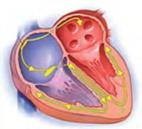
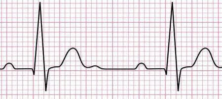
BIOLOGY - IX
Heart beat Joint diastole
Cardiac cycle Ventricular systole
Atrial systole
Illustration 2.14 : Cardiac cycle Have you noticed the illustration 2.14. Which are the phases included in a cardiac cycle?
SA node (Pacemaker)
y y Time required for completing these is 0.8 sec. One cardiac cycle is known as one heart beat. If so, what is the rate of normal heart beat? Heart rate is controlled by the rhythmic contraction and relaxation of the heart muscles. The electrical impulses necessary for the contraction of the heart chambers are produced by the SA node in the wall of the right atrium. It is also known as Pacemaker.
Electrocardiogram (ECG) ECG (Electrocardiogram) is a graphical representation of the electrical waves felt in the walls of the heart when the heart beats. The functional defects of heart can be identified by checking the ECG. 41
function How the t is of hear ed in maintain h a it people w ss le n functio er. pacemak . Find out
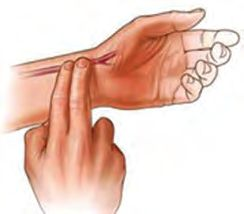
BIOLOGY - IX
Pulse Have you noticed the doctors checking the wrist of the patients as shown in the figure? Why is it done so? Press the index finger and middle finger of your right hand on your left wrist as shown in the figure. Don’t you feel a throbbing sensation in your fingers? This is called Pulse. Formulate a practical definition on pulse after conducting discussion based on the given hints.
m the Apart fro ich h wrist, w ther are the o e th parts of ere we body wh lse? pu can feel . Find out
y Contraction of left ventricle. y Elasticity of arterial wall. y The expansion of the arterial wall and regainang the previous state. Is there any relationship between the rate of heart beat and pulse rate? Do this activity.
Let students form pairs. Let one of them check one’s own rate of heart beat and also find the pulse rate with the help of the other child at the same time. Use a stop watch to ensure the time limit. Record the values obtained in table 2.3. After that, let the same child engage in exercise for one minute. Then record the heart beat and pulse rate in the table as mentioned above. Let children take turns and repeat the same activities and record it in table 2.3. Sl Rate of heart beat Pulse rate No
1
Name of Children
At rest After doing exercise exercise
At rest After doing
2 Table 2.3 : Rate of heart beat and Pulse rate 42
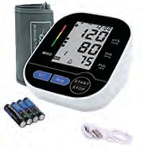
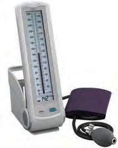

BIOLOGY - IX
Analyse the data in the table and find out what difference is there in the heart beat rate and pulse rate at rest and after exercise.
Blood pressure Blood pressure is the pressure felt in the arteries when the heart contracts and relaxes. Is the pressure felt in the arteries the same when the heart contracts and relaxes? Analyse the table 2.4 and form inference about blood pressure and prepare a note. Working of heart
Systole Diastole
Direction of the blood flow About 70 ml of blood is pumped into the arteries when the heart contracts. About 70 ml of blood enters into the heart when it relaxes.
Pressure experienced in arteries (mmHg)
Name of the blood pressure
120
Systolic pressure
80
Diastolic pressure
Table 2.4 : Blood pressure These two pressures together form one’s Blood pressure. The normal blood pressure of a healthy person is recorded as 120/80 mmHg. Blood pressure rising above this level is called hypertension and lowering from this level is called hypotension.
Sphygmomanometer
Digital BP Apparatus
Haven't you seen the equipments shown in the figure? What are these used for? 43
the What is r reason fo s of variation re? essu blood pr s it e How do body? affect the t. Find ou
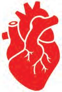
BIOLOGY - IX
Practice the method of checking blood pressure using any of these devices with the help of an expert. Then under the auspices of the school health club, check the blood pressure of the children in your school.
Double circulation How many times does the blood from one part of the body pass through the heart before returning to the same part? Analyse the illustration 2.15 and description and then form inference. Lungs
Pulmonary artery
Pulmonary Circulation
Pulmonary vein
Superior and Inferior venacavae
Systemic Circulation
Aorta
Different parts of the body
Illustration 2.15 : Blood circulation in man What all circulations are involved in the blood circulation in human beings?
............................................................................................................................................. .............................................................................................................................................
44
BIOLOGY - IX
Systemic circulation begins from the left ventricle and ends in right atrium. Pulmonary circulation begins from the right ventricle and ends in left atrium. As the same blood passes through the heart twice, the blood circulation in human is known as Double circulation.
Prepare flow charts on systemic circulation and pulmonary circulation by including heart chambers in the illustration 2.15. Blood is pumped throughout the body as a result of the activities of the heart. This blood contains oxygen, nutrients and other factors. These enter the cells through tissue fluid. Assimilation is the utilization of these nutrients by the cells.
Health of the Heart Doesn’t the malfunctioning of the heart adversely affect the functions of other organs as well? What are the factors that adversely affect the health of the heart ? Expand the list. y
Lack of exercise.
y
Unhealthy food habits.
y y How do these factors affect the health of the heart? A part of an article related to the health of the heart is given. After analysing it and collecting information, prepare an edition on the topic ‘Health of the heart’.
45
es the How do ise body util t? rien each nut . Find out
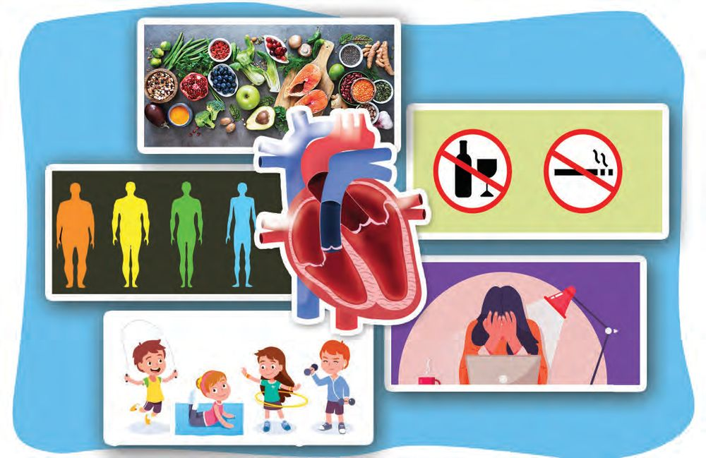
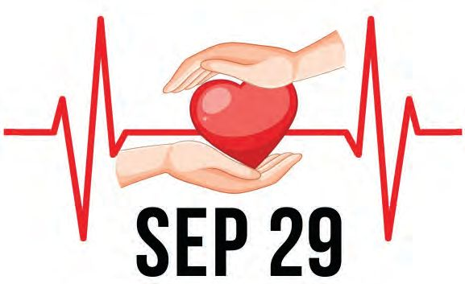
BIOLOGY - IX
Healthy food habits Avoiding bad habits like drinking alcohol and smoking
Regulating body weight according to BMI
Reducing mental stress Exercise
Protect the heart with care Studies indicate that the number of heart patients is increasing. Unhealthy food habits and lack of exercise are the main reasons for this. Consuming too much of fatty food causes deposition of fat in the arterial walls. This leads to a condition called Atherosclerosis. As a result of World Heart Day this, blood is clotted in the coronary artery leading to the condition called Coronary thrombosis and this in turn may cause heart attack. Stroke is caused by the blockage or rupture of blood vessels in the brain.
46
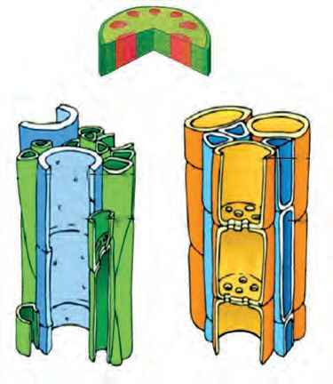
You have understood the digestion of food and the transport of nutrients. How does the transport of substances take place in plants which prepare food for all organisms?
BIOLOGY - IX
How do water and salts that are absorbed through the roots reach the leaves and the food synthesised in the leaves reach different parts of the plant, including huge trees? Discuss and complete the table 2.5 given below. Substances that are transported
Vascular tissue
Water and salts
......................
......................
Phloem
Table 2.5 : Transport in plants Analyse illustration 2.16, prepare a note on how far the structure of xylem and phloem are suitable for transport of substances.
Phloem
Xylem Tracheid
Sieve tube
Dead cells. Forms the small veins of the leaves. Long and spindle shaped.
Arranged one above the other. Since the cytoplasm is inter connected through the pores of the cross wall, food molecules can travel through it.
Vessel Dead cells. As the cross walls have been disintegrated, look like long pipes.
Companion cell Along with the sieve tube, it helps in the transport of food.
Illustration 2.16 : Vascular tissues in plants 47
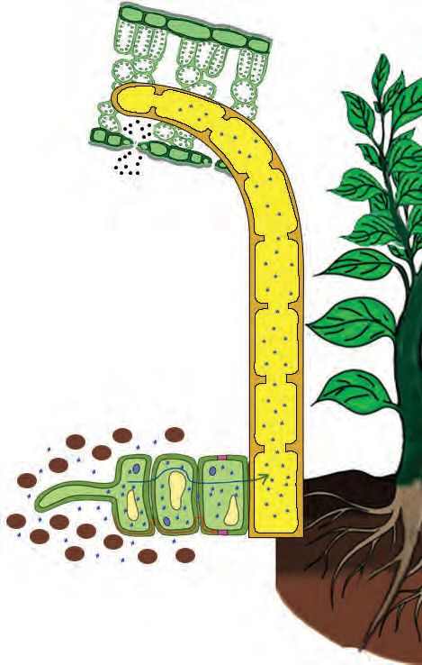
BIOLOGY - IX
You have understood the structure of xylem and phloem. How does the conduction of substance take place through them? Analyse the illustration 2.17 based on the indicators and record the inferences.
Conduction of water Water from xylem tubes reaches leaf cells by osmosis and is expelled by transpiration.
Loss of water from leaves through transpiration causes water to rise through the xylem tubes. The forces such as cohesion and adhesion of water molecules help in this process.
Water enters the root cells by osmosis. To some extent, root pressure helps in the rise of the water that reaches the xylem tube.
48
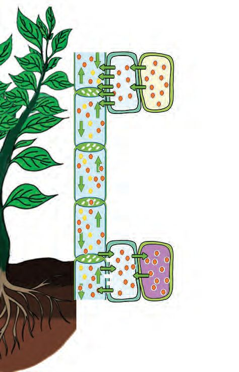
BIOLOGY - IX
Conduction of Food
Glucose produced in the leaves as a result of photosynthesis is transferred to the sieve tubes in the form of sucrose using energy.
The high concentration of sucrose in the sieve tubes causes water to enter there from the adjacent xylem tubes. The resulting high turgor pressure enables the conduction of sucrose through the sieve tubes.
Entry of sucrose to the cells
Illustration 2.17 : Conduction in plants
49
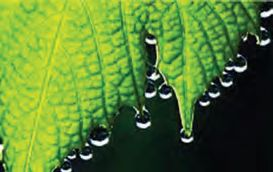
BIOLOGY - IX
y
Processes which help in the conduction of water.
y
Absorption of water from soil to root.
y
Conduction of water through the stem.
y
Transpiration and conduction of water.
y
Conduction of materials from leaf cells to other parts of the plant.
Haven’t you noticed the water droplets that are on the margins of the leaves of some plants in the early morning? What is the reason? Find out.
The food stored by plants in various forms such as protein, starch and fat is consumed by heterotrophic organisms and this makes possible the existence of the living world. You have understood the process of breaking down of the nutrients thus obtained into simple particles and the absorption and conduction of the simple molecules formed from various nutrients. It is our duty to follow a lifestyle that is conducive to the healthcare of the digestive system and circulatory system which help in this. Life processes are carried out as a result of constant chemical reactions of various components produced in the cell and the components that reach the cell from the external environment. Energy production is such a process. As a result of these life processes, many excretory products are also formed. Timely removal of these products are essential for the balance of the life processes. How this can be made possible will be examined in the next chapter.
50

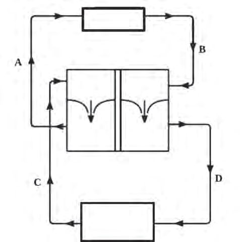
BIOLOGY - IX
Let us Assess
1. Which one of the following is related to the digestion of Fat? a) Protease b) Lipase c) Amylase d) Carbohydrase 2. An illustration related to the circulatory system of human beings is given below. Analyse it and answer the questions. Lungs
Right atrium
Left atrium
Right Left ventricle ventricle Heart
Organs of the body
a) Which letter indicates Pulmonary artery? b) Which blood vessel is indicated by the letter D? c) Does the blood that has entered the ventricles return to the atria? Why? d) What is the importance of double circulation in human? 3. A flowchart on the path of nutrients is given below. Observe it and answer the questions.
A
Small intestine
Liver
B
C
Heart
a) Name the blood vessels indicated by the letters A, B and C. b) Do all the nutrients absorbed from the small intestine have the same path? Explain. 51

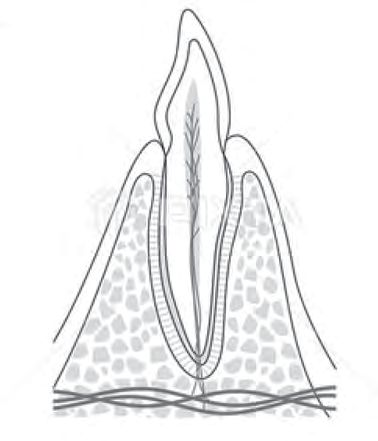
BIOLOGY - IX
4. Which among the following processes takes place by utilising energy? a) Entry of water into the root cells. b) Entry of sucrose into the sieve tube. c) Loss of water from leaves through transpiration. d) Conduction of water molecules through xylem tubes. 5. Redraw the figure given below, name and label the parts based on the indicators.
a) Part where odontoblast cells are seen. b) Tissue that holds the tooth in the gum. c) The living tissue by which tooth is made.
Extended activities 1.
Conduct an awareness class on the topic ‘Bad habits and health of the heart’.
2.
Organize a nutritious food fest under the auspices of the school health club using locally available food items.
52